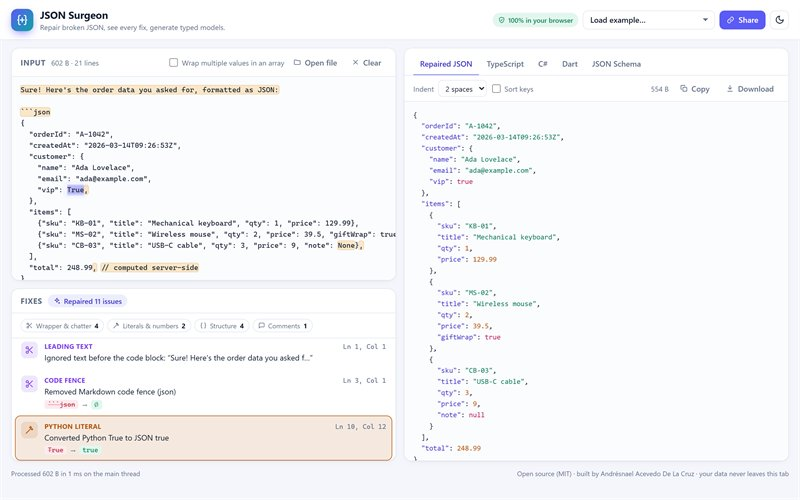

Live
JSON Surgeon
Paste broken JSON and get valid JSON back, with an explanation for every fix.
- Repairs LLM output: Markdown fences, chatter, truncated responses, Python and JavaScript literals.
- Every fix is reported with its line and column in your original input.
- Generates TypeScript interfaces, C# records, Dart classes and JSON Schema.
- Zero-dependency npm library and CLI that share the same engine.
npm i json-surgeon